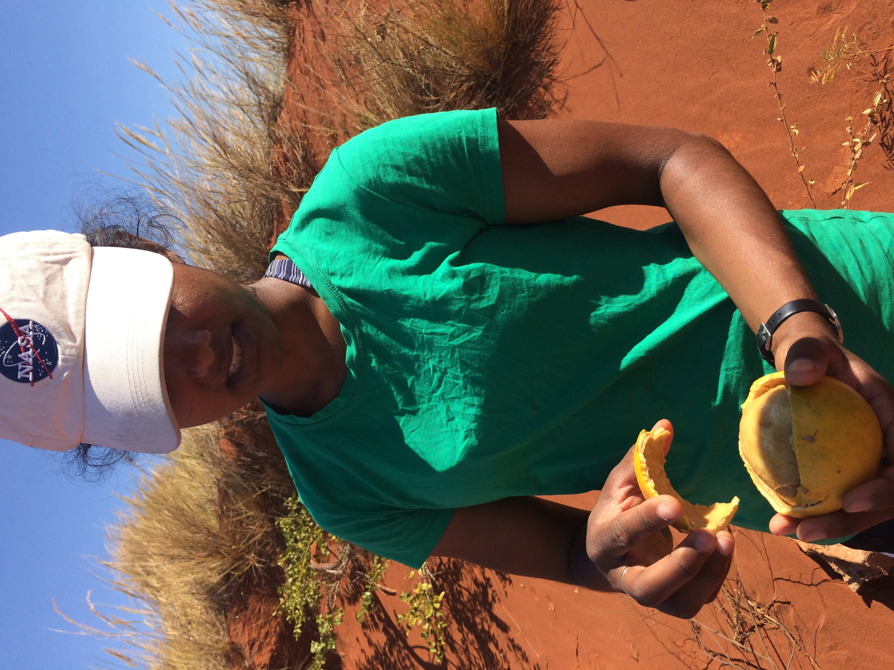

Those weekend adventures were great solutions to a long distance connection because they had the chance to connect in the wild.
They climbed and hiked in the desert, and snowshoed and cross-country skied in Colorado.
They enjoyed each other's company so much that when Parke asked Murti if she had any interest in accepting a mileage ticket for a trip to Madagascar, she immediately accepted.
Aside from immigrating to the US, it was Murti's first trip overseas and she appreciated the country's beauty, its people, and its biodiversity.
They spent a few weeks spending time with Tara's family, learning about the important work Pivot is doing in the Ifanadiana district, and exploring the nearby forests. They tried delicious fruits, some of which were completely new to them (photo above of a "savanna fruit").